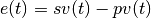

wastebot.heatbed package¶
Subpackages¶
Submodules¶
wastebot.heatbed.controller module¶
Module for the controller of the heatbed which use the PID control method.
-
class
wastebot.heatbed.controller.Controller(params)¶ Bases:
objectController class which use the PID controlling method.
The instance of this class reads the prosess variable and try to control the manipulative variable.
In addition, this class can be called from wastebot.heatbed module. (Please see the “Examples” section for details.)
Parameters: params (dictionary) – The parameters of this controller class. This dictionary must contain the following keys and values corresponding to these keys.
- sv: float
- The set variable. In other words, target value of the manipulative variable (unit: arbitrary). This value must be within the pv_range.
- pv_range: numpy.ndarray[float]
- The range of the process variable (unit: arbitrary). This range is stored in the 1D numpy array of which storing format is [min, max].
- mv_max: float
- The max value of the manipulative variable (unit: arbitrary). Note that this class is assuming that the min value of the manipulative variable is 0.
- prop_band: float
- The proportional band (unit: %). This class is assuiming that the range of prop_band must be (0, 100].
- integral_time: float
- The integral time (unit: sampling points). This value must be a positive value.
- derivative_time: float
- The derivative time (unit: sampling points). This value must be a positive value.
- initial_pv: float
- The initial value of the process variable (unit: arbitrary). This value must be within the pv_range.
Note
PID control
- P is the initial of “Proportional”.
- I is the initial of “Integral”.
- D is the initial of “Derivative”.
Following formula represents the PID control.

Note that
 represents the time.
represents the time.- is the set variable. In other words, target value of the manipulative variable.
- is the process variable. For example, temperature and degree etc.
- is the error between sv and pv.
 is the manipulative variable. For example, power and torque etc.
is the manipulative variable. For example, power and torque etc.- is the proportional band (unit: %).
- is the integral time.
- is the derivative time.
-
mv¶ Present manipulative variable (unit – arbitrary).
-
pv¶ Present process variable (unit – arbitrary). Note that if you change the present pv, the mv is updated.
-
sv¶ Present set variable (unit – arbitrary). Note that if you change the sv, the integrated error is reseted and the mv is updated.
wastebot.heatbed.thermistor module¶
Module for processing the output of the thermistor.
-
class
wastebot.heatbed.thermistor.ThermProc(init_adc_outputs, rt, sh_params, rd, tc=0.0)¶ Bases:
objectThermistor processor class.
The instance of this class reads the output of A/D converter which is connected to the thermistor. After that, this instance calculates the temperature via “Steinhart–Hart equation”.
In addition, this class can be called from wastebot.heatbed module. (Please see the “Examples” section for details.)
Parameters: - init_adc_outputs (numpy.ndarray[float]) – Initial A/D converter outputs which are stored in the 1D numpy array. The number of elements in this array corresponds to the length of moving averaging filter. In addition, this class is assuming that the range of these value is 0~1024(10bit, unit: arbitrary).
- rt (int ot float) – The resistance of the thermistor at 25°C (unit: ohm).
- sh_params (dictionary) – The parameters of “Steinhart–Hart” equation for the thermistor. This dictionary must contain the keys: “A”, “B”, “C” and values corresponding to these keys.
- rd (int or float) – The resistance of the resistor in the voltage divider (unit: ohm).
- tc (int of float) – The correction value of temperature (unit: °C, optional). Default value is 0.
Note
Steinhart–Hart equation (John S. Steinhart and Stanley R. Hart, 1968)
 is the thermodynamic temperature of the thermistor.
is the thermodynamic temperature of the thermistor.- is the resistance of the thermistor.
- are the parameters of the Steinhart–Hart equation.
-
adc_output¶ Filtered output of A/D converter (unit – arbitrary). Currently, we’re using the moving average filter.
-
read_adc_output(adc_output)¶ This function reads the new output of A/D converter (unit: arbitrary). This function is assuming that the range of this value is 0~1024.
Parameters: adc_outputs (float) – Output of A/D converter. (10bit value: 0~1024)
-
temperature¶ Calculated temperature from outputs of A/D converter (unit – °C). This class uses “Steinhart–Hart equation”.
-
therm_rss¶ Present resistance of thermistor (unit – ohm).